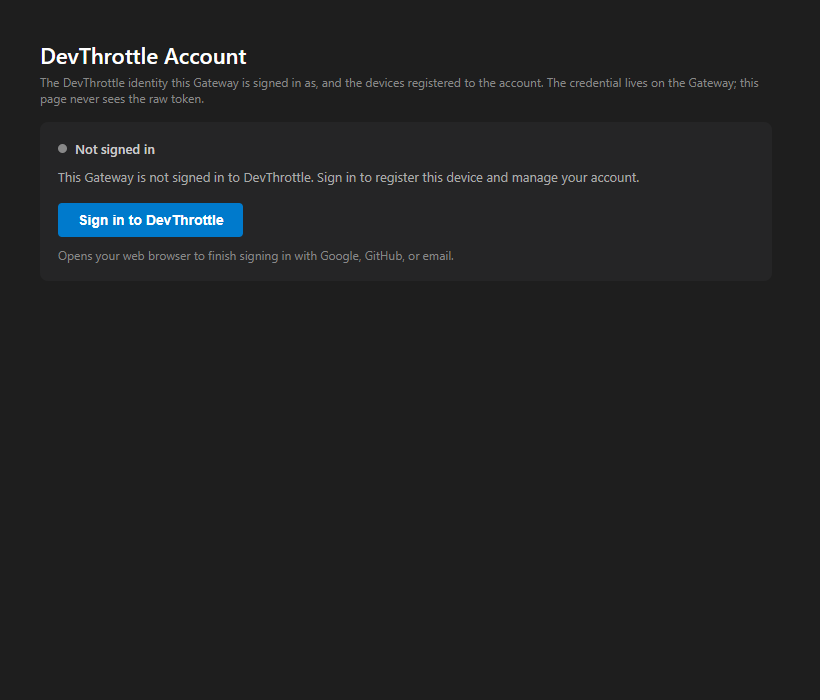
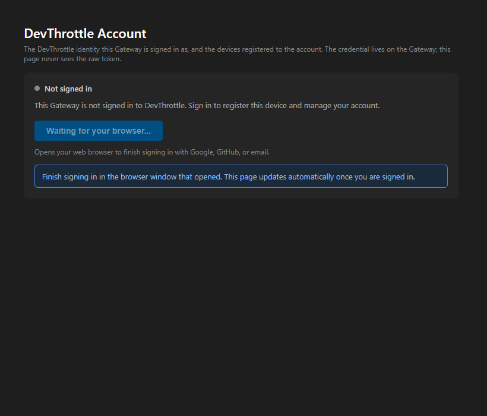
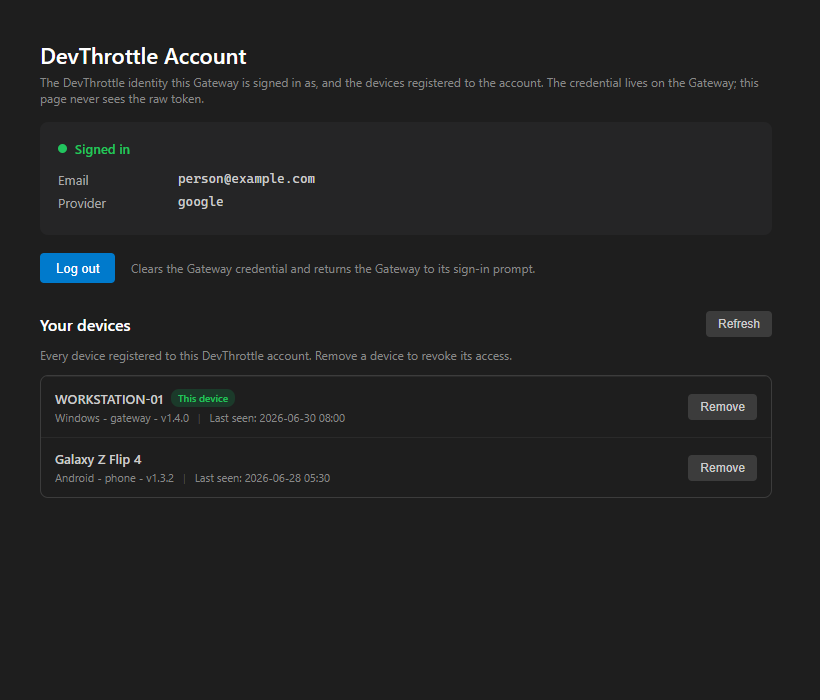
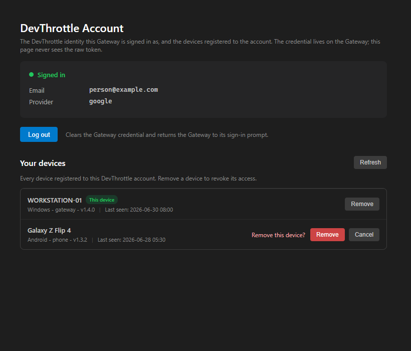
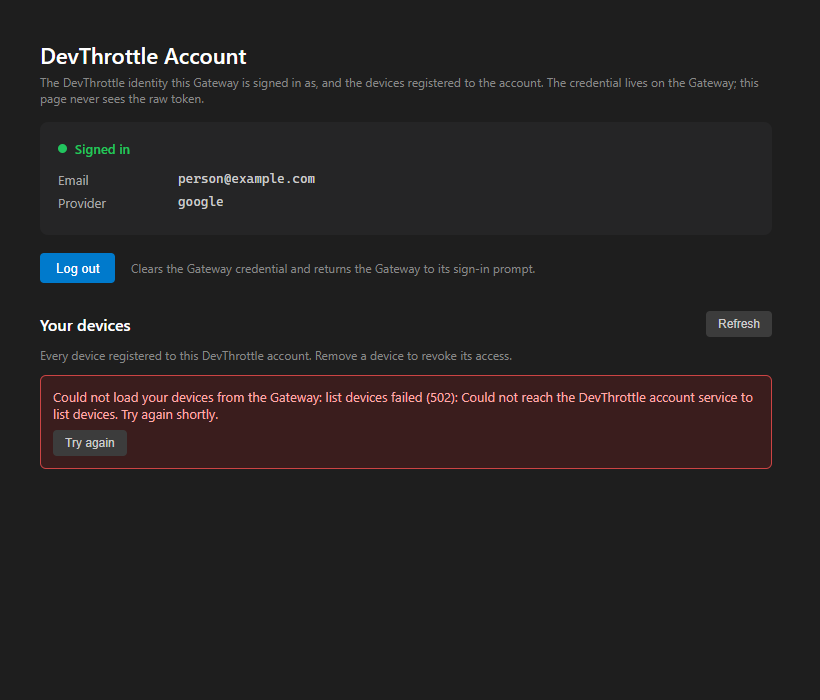
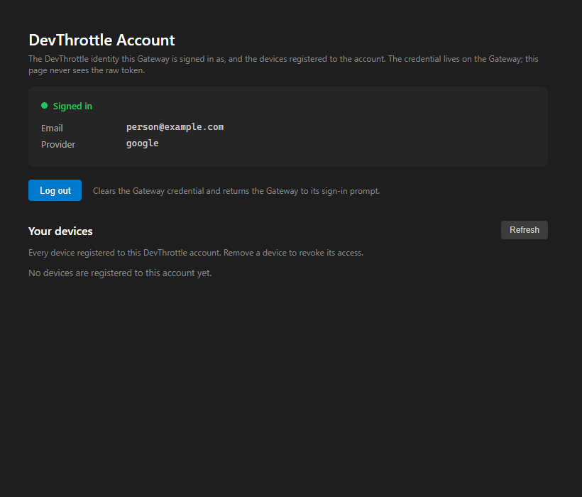

issue-853-cockpit-account | verified 2026-06-30Independent verification by the QA Agent. The PR branch was checked out into a separate worktree,
built clean (dotnet build cc-director.sln: Build succeeded, 0 warnings, 0 errors), and the
new test suites run (8 bUnit Cockpit tests + 2 Gateway endpoint tests, all passing). Visual proof was
produced independently by rendering the real compiled Account Razor component via
its bUnit proof emitter (driven by a stubbed GatewayClient) and screenshotting each state -
the QA Agent did not reuse the Developer's screenshots.
| # | Criterion | Expected | Actual | Result |
|---|---|---|---|---|
| 1 | Signed-out page shows a working sign-in action (not static "use the tray" text); click starts the Gateway loopback sign-in and the page reflects signed-in on completion. | A real "Sign in" button; clicking POSTs /account/sign-in (wrapping the existing #637 loopback) and shows in-progress; the word "tray" is gone. |
Button "Sign in to DevThrottle" rendered; bUnit test confirms the click calls the start endpoint and shows the .acct-signin-progress affordance ("Waiting for your browser..."). Endpoint AccountSignInEndpoint kicks GatewaySignInService.RunSignInAsync (#637) as a detached background task with the existing single-flight guard; it is NOT a new gate. No "tray" text. Live browser completion is the documented QA gate, judged on the component test + code review. |
PASS |
| 2 | Signed-in page shows a "Your devices" list, one row per device from GET /account/devices, each with name, last-seen, and a Remove button. |
Two-device list with name, platform/version, last-seen, and per-row Remove. | Both rows render (WORKSTATION-01, Galaxy Z Flip 4) with name, platform/type/version, "Last seen: ...", and a Remove button each. bUnit test asserts 2 rows with the expected fields. | PASS |
| 3 | The current device is marked "This device". | A "This device" badge on the Gateway's own device only. | Green "This device" badge on WORKSTATION-01; absent on the phone row. bUnit test asserts the marker on row 0 and its absence on row 1. | PASS |
| 4 | Remove, after confirmation, calls DELETE /account/devices/{id} and the row disappears on refresh. |
First click reveals a confirmation; confirming issues the DELETE and the row is gone after the list refresh. | Confirmation row ("Remove this device?" with Remove/Cancel) renders before any call. bUnit test proves no revoke happens until confirm, then DELETE is issued for the right id and the list refreshes to a single row. Live cloud revoke round-trip is the documented QA gate, judged on the component test + code review. | PASS |
| 5 | When the device list cannot be fetched, the page shows an explicit error state, not an empty list presented as "no devices". | An explicit error banner on a 502; distinct from the empty-account state. | 502 renders a red error banner ("Could not load your devices ... Try again shortly.") with a Try again button; the empty account renders a distinct "No devices are registered to this account yet." The client throws on a non-success status (no fallback to an empty list). bUnit tests assert error-not-empty and the distinct empty state. | PASS |
dotnet build cc-director.sln Build succeeded, 0 warnings, 0 errors.AccountPageTests) + 2 Gateway (AccountSignInEndpointTests) all pass.GET /account/status and POST /account/logout unchanged (those endpoint files are not in the PR diff).POST /account/sign-in is not on the public-paths allow-list, so it inherits the host-wide Gateway token middleware like the other /account routes.OnInitializedAsync; the sign-in click returns at once and polls status in the background.





Per the issue and the Developer's hand-off, the live browser-loopback sign-in completion and the live cloud device-list / Remove round-trips require a real signed-in account with cloud devices, which is the agreed QA gate (the same boundary #637 and #854 draw for their live cloud paths). Those criteria were judged on the bUnit component tests that render the real compiled component, the two Gateway endpoint tests covering the deterministic decision paths, and a code review of the render and client logic - not on a live signed-in screenshot. The non-live decision paths (no-flow host, already-signed-in, error, empty, confirmation, refresh) are all reproduced above.